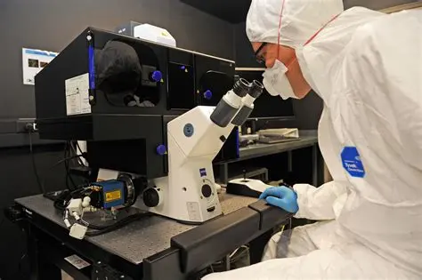
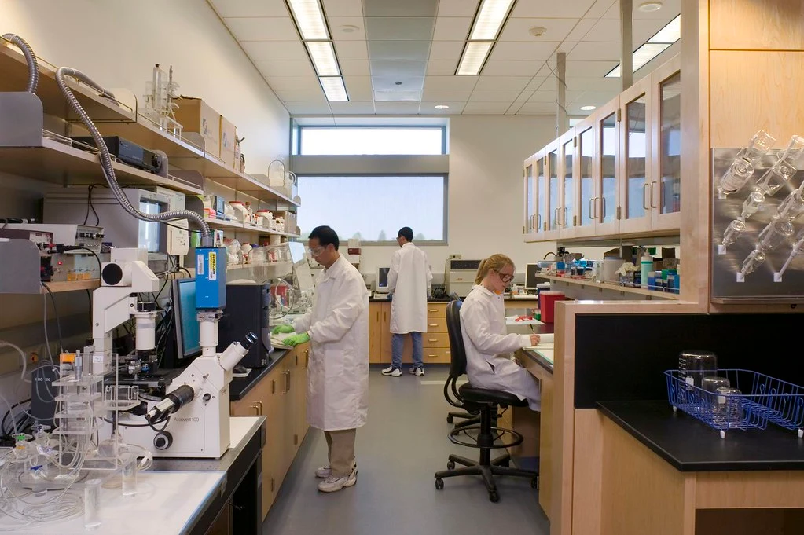
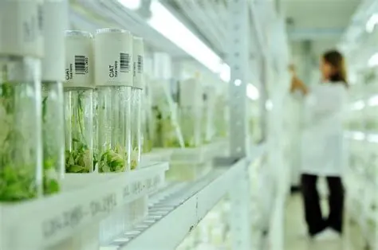
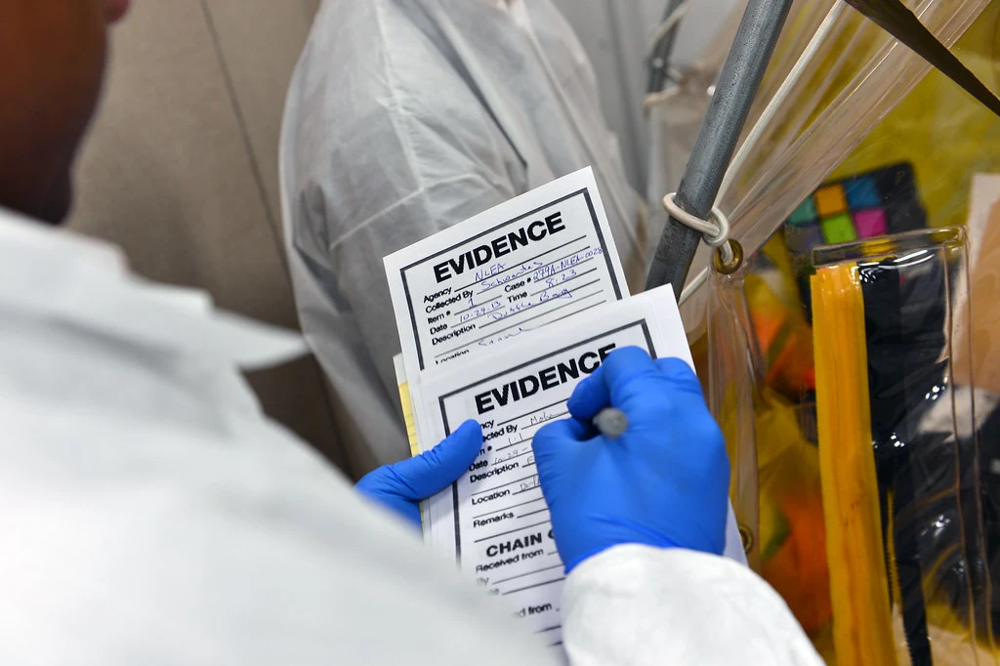

Biotechnology is a dynamic and expansive field that uses living organisms and biological systems to develop new products and technologies. The skills you gain in our lab course are foundational for a wide array of exciting and in-demand professions.
Medicine & Healthcare

- Biomedical Scientist: Developing new diagnostic tools and therapies.
- Clinical Lab Technologist: Performing tests on patient samples for disease diagnosis.
- Pharmaceutical Scientist: Researching, developing, and testing new drugs.
- Genetic Counselor: Helping individuals understand genetic conditions and risks.
Your lab skills prepare you for roles in hospitals, research labs, and pharmaceutical companies.
Research & Development

- Research Associate/Assistant: Conducting experiments and collecting data in academic or industry labs.
- Molecular Biologist: Studying genes, proteins, and cellular processes.
- Bioinformatician: Analyzing large biological datasets to find patterns and insights.
- Biotechnologist: Innovating new products using biological processes.
This course is a strong foundation for a career in pure scientific discovery.
Agriculture & Environmental Science

- Agricultural Biotechnologist: Developing disease-resistant crops, enhancing crop yield.
- Environmental Scientist: Using microbes for bioremediation (cleaning up pollution).
- Food Scientist: Ensuring food safety and developing sustainable food production methods.
- Conservation Biologist: Using genetic tools for wildlife conservation.
Apply biotech to solve global challenges in food security and sustainability.
Forensics & Public Health

- Forensic Scientist: Analyzing DNA evidence from crime scenes.
- Epidemiologist: Studying disease patterns and outbreaks using molecular data.
- Public Health Officer: Implementing programs based on biotechnological insights for disease prevention.
Contribute to justice and community well-being through scientific analysis.
No matter which path you choose, a strong foundation in biotechnology provides critical analytical, problem-solving, and laboratory skills that are highly sought after across all STEM sectors.